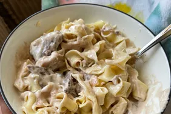

Venison Stroganoff

Finished Venison Stroganoff
Venison stroganoff features tender cuts of venison steak, mushrooms, and onions swimming in a thick and creamt sauce served over a bed of egg noodles.
Ingredients
- 1 pound venison, cut into cubes
- 1/2 teaspoon garlic powder, or to taste
- salt and pepper to taste
- 1 onion, chopped
- 10.5 ounces condensed cream of mushroom soup
- 16 ounces uncooked egg noodles
- 8 ounces sour cream
Steps
- Season venison with garlic powder, salt, and pepper; set aside.
- Heat a large skillet over medium-high heat. Sauté onion in the hot skillet until soft and translucent. Add venison and cook until all sides are browned. Drain excess grease. Stir in condensed soup, reduce heat to low, and bring to a simmer.
- Meanwhile, bring a large pot of lightly salted water to a boil. Cook noodles in boiling water until tender yet firm to the bite, 8 to 10 minutes.
- When noodles are almost done cooking, stir sour cream into venison mixture.
- Drain noodles and transfer to a rimmed serving dish. Pour venison mixture over hot, cooked noodles to serve.